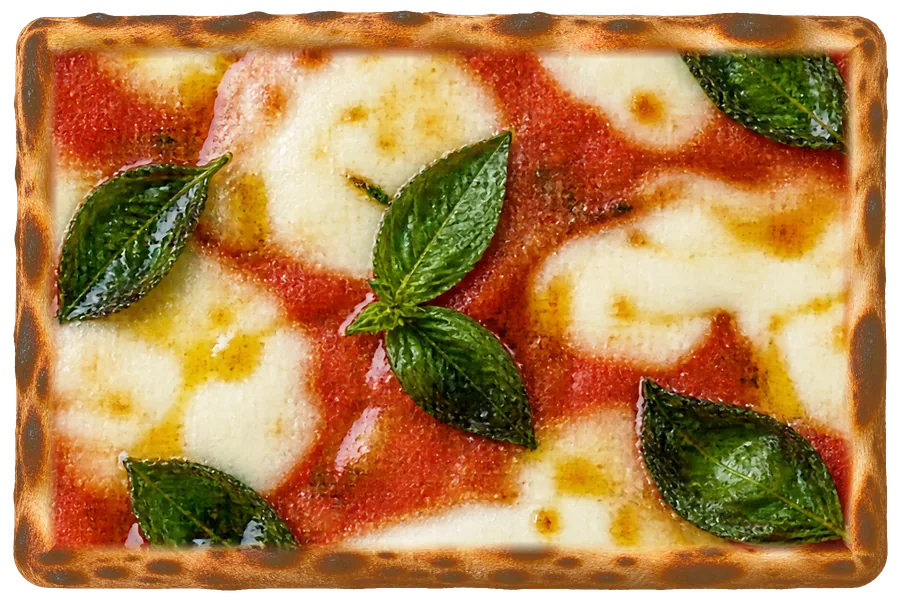

Pizza Voglia è la pizzeria di Denis a Quinto di Valpantena: un locale rinnovato, un impasto nuovo e tante proposte che cambiano spesso. Quattro capitoli per conoscerla.
01/ 04Il pizzaiolo
2002
2002 — Denis inizia a fare pizza.
Da allora la pizza è il suo mestiere. Oggi la trovi qui, in Via Valpantena 46: un locale rinnovato, con tavolini dentro e fuori per mangiare sul posto.
02/ 04L’impasto
75%
75% — L’idratazione del nuovo impasto.
Tanta acqua nell’impasto per una pizza leggera e croccante: la senti al primo morso, e non pesa.
03/ 04I formati
Farine & impasti
Farine e impasti — Tante farine, tre formati.
I.Al taglioa peso, sempre pronta in vetrina
II.Alla palalunga, da condividere
III.Teglie e vassoiper feste e buffet, su prenotazione

04/ 04La valle
Del territorio
Del territorio — Broccoli di Novaglie, Monte Veronese.
Tra le proposte speciali entrano i sapori della valle: broccoli di Novaglie, Monte Veronese, taralli e mozzarella. Chiedi in pizzeria cosa c’è oggi in vetrina.
01 / 04Continua a scorrere
N°02Il territorio
La valle,in teglia.
Quinto è all’imbocco della Valpantena, la valle che da Verona sale fino all’altopiano della Lessinia. Tra la Lessinia e le colline di Verona nascono due prodotti di cui andiamo fieri: Denis li mette nella sua speciale.
Lessinial’altopiano del Monte Veronese DOP
Valpantena, terra di rallyi tornanti di Montecchio
Grezzana
Quinto di ValpantenaPizza Voglia · Via Valpantena 46
Novaglieil broccolo di Novaglie
Verona
Adige
45°29′36″ N · 11°01′09″ E
Tav. I La Valpantena, da Verona alla Lessinia. Mappa illustrativa, non in scala.
Scheda N°1 · Lessinia
Monte Veronese DOP
Il formaggio della Lessinia, prodotto anche in Valpantena. Denis lo usa nella sua speciale, insieme al broccolo di Novaglie.
Zona
Lessinia e Valpantena
Denominazione
DOP dal 1992
In pizzeria
nella speciale “Valpantena”
Scheda N°2 · Novaglie
Broccolo di Novaglie
Il broccolo delle colline di Novaglie, a Verona: prodotto tradizionale veneto e De.Co. di Verona. La sua sagra si fa dal 1933.
Zona
Novaglie, colline di Verona
Riconoscimenti
PAT del Veneto · De.Co. di Verona
Sagra del broccolo
dal 1933
In pizzeria
nella speciale “Valpantena”
N°03Menu
Dalla vetrinaalla pala.
In vetrina la pizza al taglio, a peso e sempre pronta; poi i grandi classici e la speciale del territorio. Niente prezzi qui: passa in pizzeria o chiamaci.
✻Menu indicativo — le pizze cambiano spesso: chiedi in pizzeria le proposte del giorno.
broccoli di Novaglie · taralli · Monte Veronese · mozzarella
Nasce dalla valle che ci ospita. I broccoli di Novaglie, il carattere del Monte Veronese, la croccantezza dei taralli e la morbidezza della mozzarella: quattro ingredienti per una pizza che sa di casa, morso dopo morso.
È una delle nostre proposte speciali: chiedi in pizzeria quando la trovi in vetrina.
Teglie e vassoi di pizza al taglio per feste, compleanni e ufficio: su prenotazione, con tutto pronto all’ora che ci dici. E all’ora dell’aperitivo, passa a trovarci.